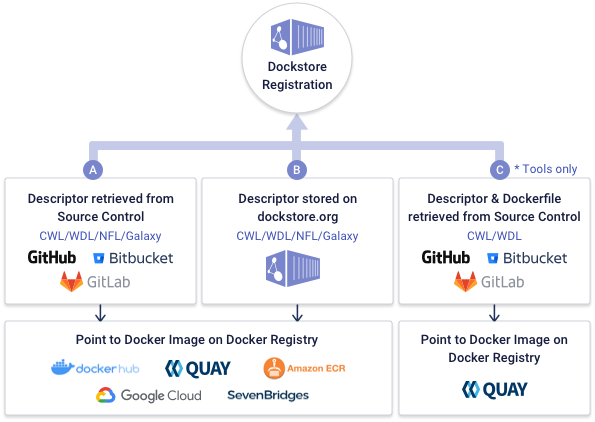

<div>
  <div fxLayout="column" fxLayoutAlign="space-around" fxLayoutGap="4rem" style="margin-bottom: 2rem">
    <div class="about-dockstore">
      <div fxLayout="row" fxLayout.lt-md="column" LayoutAlign="space-between center" fxLayoutGap="1rem" class="container">
        <div fxLayout="column" fxLayoutAlign="space-between start" fxLayoutGap="2rem">
          <h1>About Dockstore</h1>
          <h5>
            Dockstore’s mission is to enable researchers and developers to share and reuse analytical workflows and tools in a way that
            makes them machine readable and runnable in a variety of environments.
          </h5>
          <p>
            Established in 2015, Dockstore has been an evolving proof of concept designed as a starting point for community standards within
            the <a target="_blank" rel="noopener" href="https://www.ga4gh.org/">GA4GH</a>.
          </p>
          <a target="_blank" rel="noopener" href="https://www.youtube.com/channel/UCFWNYqxQvVLAuZq8rdOSE4g/videos">
            <button class="btn mb-5" fxLayout="row" fxLayoutGap="1rem" fxLayoutAlign="space-around center">
              <mat-icon [ngStyle]="{ color: 'white' }">play_circle_filled</mat-icon>
              <span fxHide fxShow.lt-sm>Video Tutorials</span>
              <span fxHide.lt-sm>More Videos</span>
            </button>
          </a>
          
        </div>
        <div fxHide.lt-sm>
          <iframe
            width="560"
            height="315"
            [src]="youtubeSafeURL"
            title="YouTube video player"
            frameborder="1rem"
            allow="accelerometer; autoplay; clipboard-write; encrypted-media; gyroscope; picture-in-picture"
            allowfullscreen
            class="mb-5"
          ></iframe>
        </div>
      </div>
    </div>

    <div fxLayout="column" class="container" fxLayoutAlign="space-between center" fxLayoutGap="1rem">
      <h3>Dockstore follow the FAIR Guiding Principles</h3>
      <span
        >Our
        <a
          target="_blank"
          rel="noopener"
          href="https://docs.dockstore.org/en/develop/advanced-topics/best-practices/best-practices-secure-fair-workflows.html"
          >FAIR best practice guide</a
        >
        helps researchers and other contributors create secure and reusable software.</span
      >
      <div fxLayout="row" fxLayout.lt-sm="column">
        <div fxLayout="column" fxLayoutAlign="none start">
          
          <h5>Findable</h5>
          <p>
            When publishing on Dockstore, we strongly suggest including robust metadata and human readable instructions. Dockstore parses
            metadata and allows it to be searchable, which helps others find workflows and tools easily.
          </p>
        </div>
        <div fxLayout="column" fxLayoutAlign="none start">
          
          <h5>Accessible</h5>
          <p>
            Dockstore never requires a user to log in to search for workflows and tools. Once found, analyses can be moved from
            environment-to-environment (e.g. <a target="_blank" rel="noopener" href="https://terra.bio/">Terra</a>,
            <a target="_blank" rel="noopener" href="https://www.dnastack.com/">DNAstack</a>, and
            <a target="_blank" rel="noopener" href="https://www.dnanexus.com/">DNAnexus</a>) and yet be guaranteed to run on anything that
            supports Docker.
          </p>
        </div>
        <div fxLayout="column" fxLayoutAlign="none start">
          
          <h5>Interoperable</h5>
          <p>
            Docker repositories (e.g.
            <a target="_blank" rel="noopener" href="https://hub.docker.com/" data-cy="Docker-hub-about-link">Docker Hub</a>) and source
            control repositories (e.g.
            <a target="_blank" rel="noopener" href="https://github.com/dockstore/dockstore" data-cy="Github-about-link">GitHub</a>) provide
            much of the needed infrastructure. Contributors are encouraged to provide clear instructions, test data and checker workflows to
            ensure their software is usable in any environment.
          </p>
        </div>
        <div fxLayout="column" fxLayoutAlign="none start">
          
          <h5>Reusable</h5>
          <p>
            One of the ultimate goals of Dockstore is to provide workflows and tools that others can find, reuse and build upon. To ensure
            this, contributors are encouraged to provide clear documentation and the exact version of the container in their descriptor
            files.
          </p>
        </div>
      </div>
    </div>

    <div class="register-dockstore pt-5 pb-5">
      <div fxLayout="row" class="container" fxLayoutAlign="space-between center" fxLayoutGap="3rem">
        
        <div fxLayout="column" fxFlex>
          <h3>Registering with Dockstore</h3>
          <h5>You can register your workflows and tools on Dockstore in three ways:</h5>
          <ul class="ordered-list">
            <li>
              Dockstore can retrieve your workflow descriptors from GitHub and other source control methods (new with
              <a href="https://docs.dockstore.org/en/develop/getting-started/github-apps/github-apps.html">github apps</a>). You are
              responsible for ensuring that your descriptors point at valid Docker images
            </li>
            <li>
              You can use our hosted workflows service to store tools and workflows directly on dockstore.org in order to quickly get
              started, prototype your ideas, and share workflows with a limited audience.
            </li>
            <li>
              Following our
              <a
                target="_blank"
                rel="noopener"
                href="https://docs.dockstore.org/en/develop/getting-started/getting-started-with-docker.html#"
                >tutorials</a
              >, you can save your descriptors on GitHub, build your Docker image automatically on Quay.io, and have Dockstore reach out and
              index your tools.
            </li>
          </ul>
          <p>
            You can mix and match these approaches and in any case, you have the opportunity to clean-up and configure your work before
            publishing to the rest of the world to see.
          </p>
        </div>
      </div>
    </div>

    <div fxLayout="column" class="container" fxLayoutAlign="space-between center" fxLayoutGap="2rem">
      <h3>The Importance of Sharing</h3>
      <div fxLayout="row" fxLayout.lt-md="column" fxLayoutAlign="space-between" fxLayoutGap="2rem">
        <div fxLayout="column" fxLayoutAlign="space-between start" fxFlex.gt-sm="45">
          <h5>Building a Community</h5>
          <p>
            Several large projects and organizations in the Biosciences, specifically cancer sequencing projects such as
            <a target="_blank" rel="noopener" href="https://dcc.icgc.org/pcawg">PCAWG</a>,
            <a target="_blank" rel="noopener" href="https://precision.fda.gov/">PrecisionFDA</a>,
            <a target="_blank" rel="noopener" href="https://www.broadinstitute.org/">the Broad Institute</a>,
            <a target="_blank" rel="noopener" href="https://www.ucsc.edu/">the University of California Santa Cruz</a>, and
            <a target="_blank" rel="noopener" href="https://github.com/cancerit">Cancer IT at Sanger</a> have registered between 10-60
            workflows each in Dockstore. We hope this work will aid the community and promote the registration of a large number of
            high-quality workflows and tools in the platform.
          </p>
          <h5>How to Cite Dockstore</h5>
          <ul>
            <li>
              For citing Dockstore as a paper, take a look at our
              <a target="_blank" rel="noopener" href="https://f1000research.com/articles/6-52/v1">F1000 paper</a>.
            </li>
            <li>
              For citing the actual code, take a look at our
              <a target="_blank" rel="noopener" href="https://zenodo.org/record/4589367#.YGSZyRNKi3I">Zenodo entry</a>.
            </li>
          </ul>
          <h5>Future Plans</h5>
          <p>
            We plan on expanding Dockstore in several ways over the coming months. For transparency, we maintain a list of long term plans
            for larger features going forward.
          </p>
          <a [href]="Dockstore.DOCKSTORE_REPO + '/wiki/Dockstore-Roadmap'" target="_blank" rel="noopener noreferrer">
            <button class="btn">Dockstore Roadmap</button>
          </a>
        </div>
        <div fxLayout="column" fxFlex>
          <mat-tab-group mat-align-tabs="center" class="workflow-tab-group">
            <mat-tab label="COVID-19">
              <mat-card class="mat-elevation-z4 about-card">
                <div fxLayout="row" fxLayoutAlign="space-around start">
                  <div fxLayout="column" fxLayoutAlign="space-between start">
                    <div fxLayout="row" fxLayout.lt-sm="column" fxLayoutGap="2rem">
                      <div fxLayout="column" fxLayoutAlign="start start" fxLayoutGap="1rem" fxLayout.lt-sm="row">
                        
                        <span class="workflowlength">{{ workflowsLength$ | async }} workflows</span>
                      </div>
                      <span>
                        The <strong>Broad Viral Genomics & Data Sciences Platform</strong> hit the ground running, producing a collection of
                        <strong>viral NGS workflows for analyzing COVID-19</strong>. Learn how to use them with your own data in linked
                        Terra workspaces.
                      </span>
                    </div>
                    <span><strong>Workflows functions include:</strong></span>
                    <ul>
                      <li>Performing assembly, QC, kraken metagenomics and aggregating statistics.</li>
                      <li>Going from raw reads (uBAM) through to producing a phylogenetic tree.</li>
                      <li>Working with your own data and/or public data, such as from NCBI SRA and GenBank.</li>
                      <li>Pulling data from SRA (via SRA accession #).</li>
                      <li>Prepare your data files for bulk upload to GenBank.</li>
                    </ul>
                    <a [routerLink]="['/organizations/BroadInstitute/collections/pgs']">
                      <button class="btn">View the Collection</button>
                    </a>
                  </div>
                </div>
              </mat-card>
            </mat-tab>
            <!-- reserved when the paper is published -->
            <!-- <mat-tab label="AnVIL"></mat-tab>
            <mat-tab label="PCAWG"></mat-tab> -->
          </mat-tab-group>
        </div>
      </div>
    </div>

    <hr />

    <div fxLayout="column" class="container" fxLayoutAlign="space-between center" fxLayoutGap="3rem">
      <h3>Special Thanks</h3>
      <p>
        Dockstore is grateful to its team, funders, contributors, and partners who have pulled together a library of over 800 workflows and
        tools.
      </p>
      <div fxLayout="column" fxLayoutAlign="space-between start" fxLayoutGap="1rem">
        <div fxLayout="row" fxLayoutGap="4rem" fxLayoutAlign="start center">
          <div fxLayout="column" fxHide.lt-md fxFlex="10">
            <h5>Funders</h5>
            <span>
              <a [routerLink]="['/funding']" data-cy="about-more-info-link">More Info</a>
              <mat-icon>keyboard_arrow_right</mat-icon>
            </span>
          </div>
          <div fxLayout="row wrap" fxLayoutAlign="start center" fxLayoutGap="4rem" fxFlex>
            <a *ngFor="let funder of funders" [href]="funder.website" target="_blank" rel="noopener" style="padding: 0.5rem 0">
              
            </a>
          </div>
        </div>
        <hr />
        <div fxLayout="row" fxLayoutGap="4rem" fxLayoutAlign="start center">
          <div fxLayout="column" fxHide.lt-md>
            <h5>Contributors</h5>
            <span>
              Meet the Team
              <mat-icon>keyboard_arrow_right</mat-icon>
            </span>
          </div>
          <div fxLayout="row wrap" fxLayoutAlign="start center" fxLayoutGap="4rem" fxFlex>
            <a *ngFor="let contributor of contributors" [href]="contributor.url" target="_blank" rel="noopener" style="padding: 0.5rem 0">
              
            </a>
          </div>
        </div>
        <hr />
        <div fxLayout="row" fxLayoutGap="4rem" fxFlex fxLayoutAlign="start center">
          <div fxLayout="column" fxHide.lt-md>
            <h5>Integration</h5>
            <h5>Partners</h5>
          </div>
          <div fxLayout="row wrap" fxLayoutAlign="start center" fxLayoutGap="4rem" fxFlex>
            <a *ngFor="let partner of partners" [href]="partner.url" target="_blank" rel="noopener">
              
            </a>
          </div>
        </div>
      </div>
    </div>
  </div>
</div>
